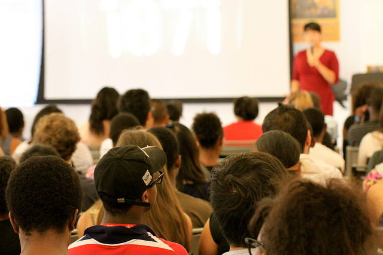

sponsors
our team
about
home
sponsors
our team
about
home
Protostar is an entirely student-run organization that provides high school students the resources and innovative thinking needed to launch a successful startup. Whether we're teaching student market segmentation, or competitive position, we will teach students the ABC's of entrepreneurship and help them develop the vital skills needed to create a real startup. Our mission is to incite creativity within the young entrepreneur and provide the necessary resources and tools needed to build the ideal world they envision. By providing teenage entrepreneurs with the platform and tools to develop their creativity and network with other like-minded peers, we hope to inspire students with the tenacity to build and pursue their own viable startups. The focus of the program is on taking action, learning from results, helping students become successful entrepreneurs, and most importantly, having fun. In other words, we're pretty cool ;)
Over the course of the year, students will form of three to six students, receive the ability to get team-based mentorship from experienced professionals, and found a startup based on a topic of their choosing, whether it be related to art, music, computer science, environmental issues, etc. With several chapters around the Chicagoland area, including Lane Tech and Jones College Prep, Protostar culminates with Demo Day: a Shark-Tank style pitch competition where Protostar teams from around the city receive feedback from a panel of established entrepreneurs and the opportunity to compete for a $1000 prize pool to continue their ventures.
Simply put, it's a great metaphor for emerging entrepreneurs! Since entrepreneurship can be quite a difficult journey, students will heavily rely heavily on the guidance given to them by us and their mentors in order to become a fully-fledged entrepreneur!
a very young star that is still gathering mass from its parent molecular cloud